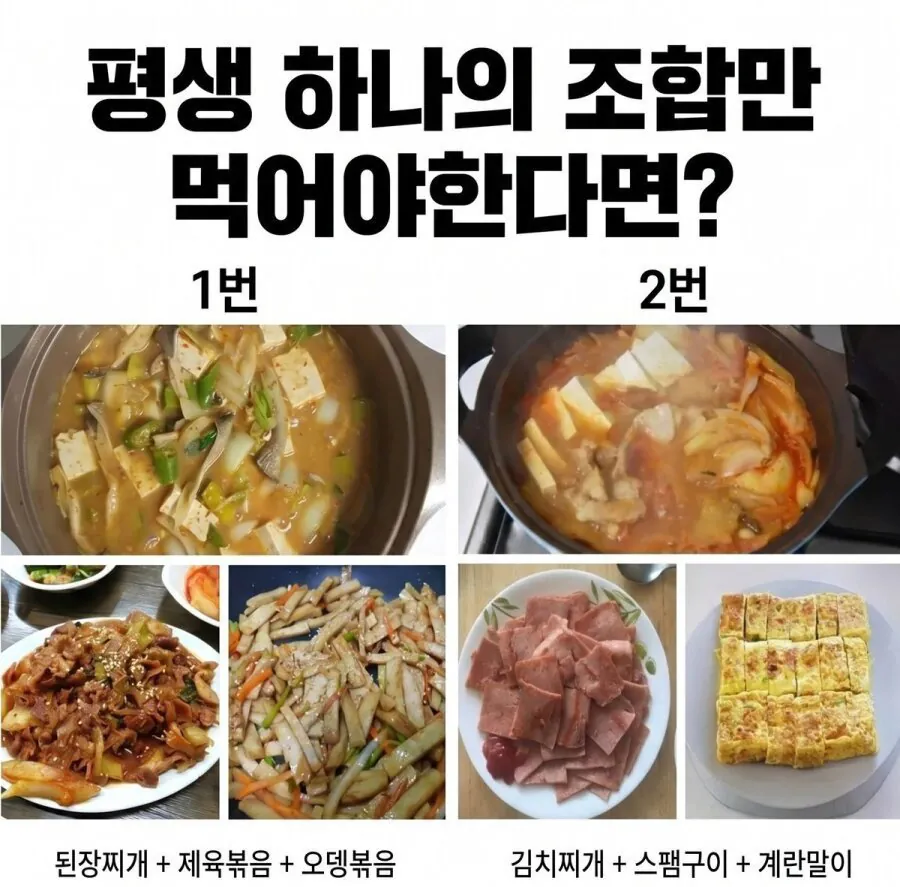

평생 하나의 조합만 먹어야한다면?
댓글
닥1
아 개맛있겠다
111
닥1
된장제육! 오뎅볶음은 님이 가져가서 드세요
난 제육보단 김찌가 더 중요해서 2
제육때문에 밸붕임
오뎅에서 1은 맛알못임
2
1번은 된장 고추장 간장메인으로 다들어가서 벨붕아님?
고기가 갈비랑 제육으로 바꿔야할꺼같음
스팸은 좀...
난 2번인데...
닥2지
1에서 평생 계란말이를 그리워할듯
난 닥후
내가 왜
제육이 강하긴 하다
2
제육 된찌를 어케이기냐..
1번이긴한데 김치없는삶이 가능할까?
1번과 2번을 조합해서 먹겠슴미다
평생은 안 보고 당장의 맛만 보고 고르네
제육에 김치 들어간 버전임 아닌버전임?
들어간거면 1 아닌거면 2
1. 밸붕.
2번!
1. 밸붕이다 이건
1 김찌싫어
1번 문제점 : 일평생 김치 못먹음
2번 문제점 : 일평생 돼지고기 못먹음
김치찌개에 돼지고기 넣어먹자
스팸은 가끔 먹어야 맛있지
영양학적으로도 뭔가 비슷할거같은 느낌?
벨붕 닥1